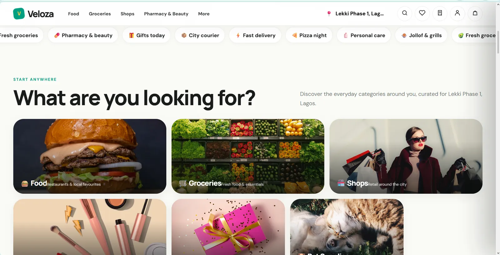
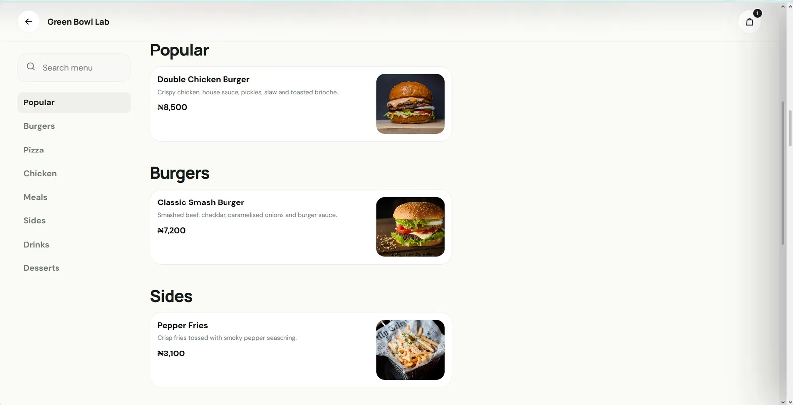
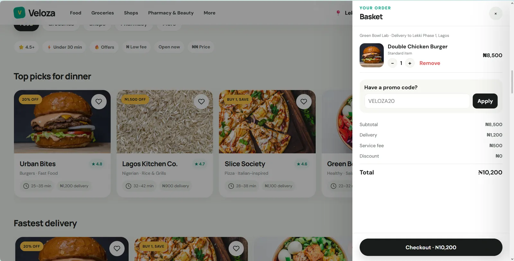
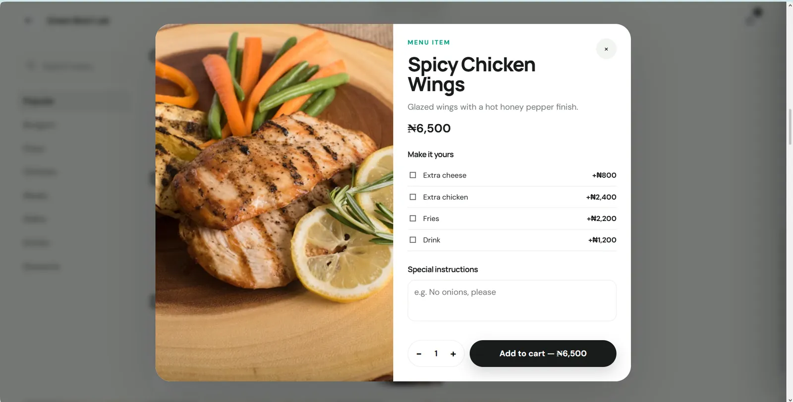

SET THE AREA
Delivery context begins with location because availability depends on where the order is going.


Everyday shopping products need dense information without making basic actions like choosing an area, inspecting a product or checking out feel heavy.
Veloza keeps the interaction model direct: location first, compact product discovery, clear basket states and lightweight modals.



This section reads the supplied artifacts as product evidence: what the interface has to keep understandable, connected or constrained.
Delivery context begins with location because availability depends on where the order is going.
Discovery and category browsing keep the catalogue navigable before checkout begins.
Basket and favourites separate immediate purchase intent from things the user wants to keep.
Account and checkout states turn the catalogue into an end-to-end commerce experience.
A compact contact sheet keeps the page readable; select any frame to inspect it at full size.